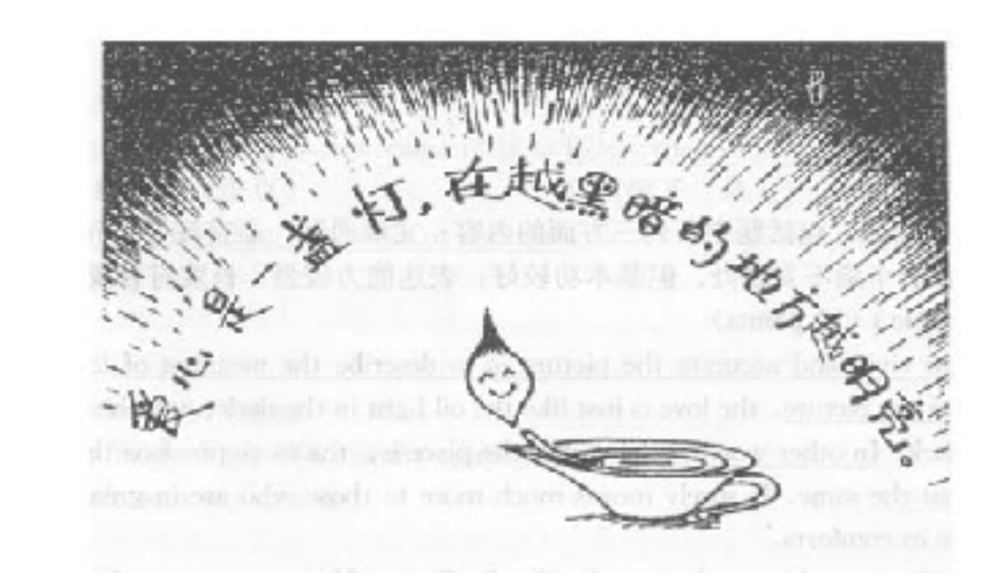

2001年全国硕士研究生入学统一考试英语试题(真题解析)(真题解析2)
Section I Use of Englis
Directions：
For each numbered blank in the following passage, there are four choices marked [A] , [B] , [C] and [D] . Choose the best one and mark your answer on ANSWER SHEET 1 by blackening the corresponding letter in the brackets with a pencil. (10 points)
The government is to ban payments to witnesses by newspapers seeking to buy up people involved in prominent cases 1 the trial of Rosemary West.
In a significant 2 of legal controls over the press, Lord Irvine, the Lord Chancellor, will introduce a 3 bill that will propose making payments to witnesses 4 and will strictly control the amount of 5 that can be given to a case 6 a trial begins.
In a letter to Gerald Kaufman, chairman of the House of Commons media select committee, Lord Irvine said he 7 with a committee report this year which said that self regulation did not 8 sufficient control.
9 of the letter came two days after Lord Irvine caused a 10 of media protest when he said the 11 of privacy controls contained in European legislation would be left to judges 12 to Parliament.
The Lord Chancellor said introduction of the Human Rights Bill, which 13 the European Convention on Human Rights legally 14 in Britain, laid down that everybody was 15 to privacy and that public figures could go to court to protect themselves and their families.
“Press freedoms will be in safe hands 16 our British judges,” he said.
Witness payments became an 17 after West was sentenced to 10 life sentences in 1995. Up to 19 witnesses were 18 to have received payments for telling their stories to newspapers. Concerns were raised 19 witnesses might be encouraged exaggerate their stories in court to 20 guilty verdicts.
| 1. | [A] as to | [B] for instance | [C] in particular | [D] such as |
|---|---|---|---|---|
| 2. | [A] tightening | [B] intensifying | [C] focusing | [D] fastening |
| 3. | [A] sketch | [B] rough | [C] preliminary | [D] draft |
| 4. | [A] illogical | [B] illegal | [C] improbable | [D] improper |
| 5. | [A] publicity | [B] penalty | [C] popularity | [D] peculiarity |
| 6. | [A] since | [B] if | [C] before | [D] as |
| 7. | [A] sided | [B] shared | [C] complied | [D] agreed |
| 8. | [A] present | [B] offer | [C] manifest | [D] indicate |
| 9. | [A] Release | [B] Publication | [C] Printing | [D] Exposure |
| 10. | [A] storm | [B] rage | [C] flare | [D] flash |
| 11. | [A] translation | [B] interpretation | [C] exhibition | [D] demonstration |
| 12. | [A] better than | [B] other than | [C] rather than | [D] sooner than |
| 13. | [A] changes | [B] makes | [C] sets | [D] turns |
| 14. | [A] binding | [B] convincing | [C] restraining | [D] sustaining |
| 15. | [A] authorized | [B] credited | [C] entitled | [D] qualified |
| 16. | [A] with | [B] to | [C] from | [D] by |
| 17. | [A] impact | [B] incident | [C] inference | [D] issue |
| 18. | [A] stated | [B] remarked | [C] said | [D] told |
| 19. | [A] what | [B] when | [C] which | [D] that |
| 20. | [A] assure | [B] confide | [C] ensure | [D] guarantee |
Section II Reading Comprehension
Part A
Directions:
Each of the passages below is followed by some questions. For each questions there are four answers marked [A] , [B] , [C] and [D] . Read the passages carefully and choose the best answer to each of the questions. Then mark your answer on ANSWER SHEET 1 by blackening the corresponding letter in the brackets with a pencil. (40 points)
Text 1
Specialisation can be seen as a response to the problem of an increasing accumulation of scientific knowledge. By splitting up the subject matter into smaller units，one man could continue to handle the information and use it as the basis for further research. But specialisation was only one of a series of related developments in science affecting the process of communication. Another was the growing professionalisation of scientific activity.
No clear-cut distinction can be drawn between professionals and amateurs in science: exceptions can be found to any rule. Nevertheless, the word “amateur” does carry a connotation that the person concerned is not fully integrated into the scientific community and, in particular, may not fully share its values. The growth of specialisation in the nineteenth century, with its consequent requirement of a longer, more complex training, implied greater problems for amateur participation in science. The trend was naturally most obvious in those areas of science based especially on a mathematical or laboratory training, and can be illustrated in terms of the development of geology in the United Kingdom.
A comparison of British geological publications over the last century and a half reveals not simply an increasing emphasis on the primacy of research, but also a changing definition of what constitutes an acceptable research paper. Thus, in the nineteenth century, local geological studies represented worthwhile research in their own right; but, in the twentieth century, local studies have increasingly become acceptable to professionals only if they incorporate, and reflect on, the wider geological picture. Amateurs, on the other hand, have continued to pursue local studies in the old way. The overall result has been to make entrance to professional geological journals harder for amateurs, a result that has been reinforced by the widespread introduction of refereeing, first by national journals in the nineteenth century and then by several local geological journals in the twentieth century. As a logical consequence of this development, separate journals have now appeared aimed mainly towards either professional or amateur readership. A rather similar process of differentiation has led to professional geologists coming together nationally within one or two specific societies, whereas the amateurs have tended either to remain in local societies or to come together nationally in a different way.
Although the process of professionalisation and specialisation was already well under way in British geology during the nineteenth century, its full consequences were thus delayed until the twentieth century. In science generally, however, the nineteenth century must be reckoned as the crucial period for this change in the structure of science.
21.The growth of specialisation in the 19th century might be more clearly seen in sciences such as _______.
- [A] sociology and chemistry
- [B] physics and psychology
- [C] sociology and psychology
- [D] physics and chemistry
22.We can infer from the passage that _______.
- [A] there is little distinction between specialisation and professionalisation
- [B] amateurs can compete with professionals in some areas of science
- [C] professionals tend to welcome amateurs into the scientific community
- [D] amateurs have national academic societies but no local ones
23.The author writes of the development of geology to demonstrate _______.
- [A] the process of specialisation and professionalisation
- [B] the hardship of amateurs in scientific study
- [C] the change of policies in scientific publications
- [D] the discrimination of professionals against amateurs
24.The direct reason for specialisation is _______.
- [A] the development in communication
- [B] the growth of professionalisation
- [C] the expansion of scientific knowledge
- [D] the splitting up of academic societies
Text 2
A great deal of attention is being paid today to the so-called digital divide-the division of the world into the info (information) rich and the info poor. And that divide does exist today. My wife and I lectured about this looming danger twenty years ago. What was less visible then, however, were the new, positive forces that work against the digital divide. There are reasons to be optimistic.
There are technological reasons to hope the digital divide will narrow. As the Internet becomes more and more commercialized, it is in the interest of business to universalize access-after all, the more people online, the more potential customers there are. More and more governments, afraid their countries will be left behind, want to spread Internet access. Within the next decade or two, one to two billion people on the planet will he netted together. As a result, I now believe the digital divide will narrow rather than widen in the years ahead. And that is very good news because the Internet may well be the most powerful tool for combating world poverty that we’ve ever had.
Of course, the use of the Internet isn’t the only way to defeat poverty. And the Internet is not the only tool we have. But it has enormous potential.
To take advantage of this tool, some impoverished countries will have to get over their outdated anti-colonial prejudices with respect to foreign investment. Countries that still think foreign investment is an invasion of their sovereignty might well study the history of infrastructure（the basic structural foundations of a society）in the United States. When the United States built its industrial infrastructure, it didn’t have the capital to do so. And that is why America’s Second Wave infrastructure-including roads, harbors, highways, ports and so on-were built with foreign investment. The English, the Germans, the Dutch and the French were investing in Britain’s former colony. They financed them. Immigrant Americans built them. Guess who owns them now? The Americans. I believe the same thing would be true in places like Brazil or anywhere else for that matter. The more foreign capital you have helping you build your Third Wave infrastructure, which today is an electronic infrastructure, the better off you’re going to be. That doesn't mean lying down and becoming fooled, or letting foreign corporations run uncontrolled. But it does mean recognizing how important they can be in building the energy and telecom infrastructures needed to take full advantage of the Internet.
25.Digital divide is something _______.
- [A] getting worse because of the Internet
- [B] the rich countries are responsible for
- [C] the world must guard against
- [D] considered positive today
26.Governments attach importance to the Internet because it _______.
- [A] offers economic potentials
- [B] can bring foreign funds
- [C] can soon wipe out world poverty
- [D] connects people all over the world
27.The writer mentioned the case of the United States to justify the policy of _______.
- [A] providing financial support overseas
- [B] preventing foreign capital’s control
- [C] building industrial infrastructure
- [D] accepting foreign investment
28. It seems that now a country’s economy depands much on _______.
- [A] how well-developed it is electronically
- [B] whether it is prejudiced against immigrants
- [C] whether it adopts America’s industrial pattern
- [D] how much control it has over foreign corporations
Text 3
Why do so many Americans distrust what they read in their newspapers? The American Society of Newspaper Editors is trying to answer this painful question. The organization is deep into a long self-analysis known as the journalism credibility project.
Sad to say, this project has turned out to be mostly low-level findings about factual errors and spelling and grammar mistakes, combined with lots of headscratching puzzlement about what in the world those readers really want.
But the sources of distrust go way deeper. Most journalists learn to see the world through a set of standard templates (patterns) into which they plug each day’s events. In other words, there is a conventional story line in the newsroom culture that provides a backbone and a ready-made narrative structure for otherwise confusions news.
There exists a social and cultural disconnect between journalists and their readers which helps explain why the “standard templates”of the newsroom seem alien many readers. In a recent survey, questionnaires were sent to reporters in five middle size cities around the country, plus one large metropolitan area. Then residents in these communities were phoned at random and asked the same questions.
Replies show that compared with other Americans, journalists are more likely to live in upscale neighborhoods, have maids, own Mercedeses, and trade stocks, and they’re less likely to go to church, do volunteer work, or put down roots in community.
Reporters tend to be part of a broadly defined social and cultural elite, so their work tends to reflect the conventional values of this elite. The astonishing distrust of the news media isn’t rooted in inaccuracy or poor reportorial skills but in the daily clash of world views between reporters and their readers.
This is an explosive situation for any industry, particularly a declining one. Here is a troubled business that keeps hiring employees whose attitudes vastly annoy the customers. Then it sponsors lots of symposiums and a credibility project dedicated to wondering why customers are annoyed and fleeing in large numbers. But it never seems to get around to noticing the cultural and class biases that so many former buyers are complaining about. If it did, it would open up its diversity program, now focused narrowly on race and gender, and look for reporters who differ broadly by outlook, values, education, and class.
29.What is the passage mainly about?
- [A] needs of the readers all over the world.
- [B] causes of the public disappointment about newspapers.
- [C] origins of the declining newspaper industry.
- [D] aims of a journalism credibility project.
30.The results of the journalism credibility project turned out to be _______.
- [A] quite trustworthy
- [B] somewhat contradictory
- [C] very illuminating
- [D] rather superficial
31. The basic problem of journalists as pointed out by the writer lies in their _______.
- [A] working attitude
- [B] conventional lifestyle
- [C] world outlook
- [D] educational background
32.Despite its efforts, the newspaper industry still cannot satisfy the readers owing to its_______.
- [A] failure to realize its real problem
- [B] tendency to hire annoying reporters
- [C] likeliness to do inaccurate reporting
- [D] prejudice in matters of race and gender
Text 4
The world is going through the biggest wave of mergers and acquisitions ever witnessed. The process sweeps from hyperactive America to Europe and reaches the emerging countries with unsurpassed might. Many in these countries are looking at this process and worrying: "Won't the wave of business concentration turn into an uncontrollable anti-competitive force?"
There's no question that the big are getting bigger and more powerful. Multinational corporations accounted for less than 20% of international trade in 1982. Today the figure is more than 25% and growing rapidly. International affiliates account for a fast-growing segment of production in economies that open up and welcome foreign investment. In Argentina, for instance, after the reforms of the early 1990s, multinationals went from 43% to almost 70% of the industrial production of the 200 largest firms. This phenomenon has created serious concerns over the role of smaller economic firms, of national businessmen and over the ultimate stability of the world economy.
I believe that the most important forces behind the massive M&A wave are the same that underlie the globalization process: falling transportation and communication costs, lower trade and investment barriers and enlarged markets that require enlarged operations capable of meeting customers' demands. All these are beneficial, not detrimental, to consumers. As productivity grows, the world's wealth increases.
Examples of benefits or costs of the current concentration wave are scanty. Yet it is hard to imagine that the merger of a few oil firms today could re-create the same threats to competition that were feared nearly a century ago in the U.S., when the Standard Oil trust was broken up. The mergers of telecom companies, such as WorldCom, hardly seem to bring higher prices for consumers or a reduction in the pace of technical progress. On the contrary, the price of communications is coming down fast. In cars, too, concentration is increasing-witness Daimler and Chrysler, Renault and Nissan-but it does not appear that consumers are being hurt.
Yet the fact remains that the merger movement must be watched. A few weeks ago, Alan Greenspan warned against the megamergers in the banking industry. Who is going to supervise, regulate and operate as lender of last resort with the gigantic banks that are being created? Won't multinationals shift production from one place to another when a nation gets too strict about infringements to fair competition? And should one country take upon itself the role of “defending competition” on issues that affect many other nations, as in the U S. vs. Microsoft case ?
33. What is the typical trend of businesses today?
- [A] to take in more foreign funds.
- [B] to invest more abroad.
- [C] to combine and become bigger.
- [D] to trade with more countries.
34.According to the author, one of the driving forces behind M&A wave is _______.
- [A] the greater customer demands.
- [B] a surplus supply for the market.
- [C] a growing productivity.
- [D] the increase of the world’s wealth.
35.From paragraph 4 we can infer that _______.
- [A] the increasing concentration is certain to hurt consumers
- [B] WorldCom serves as a good example of both benefits and costs
- [C] the costs of the globalization process are enormous
- [D] the Standard Oil trust might have threatened competition
36.Toward the new business wave, the writer’s attitude can he said to be _______.
- [A] optimistic
- [B] objective
- [C] pessimistic
- [D] biased
Text 5
When I decided to quit my full time employment it never occurred to me that I might become a part of a new international trend. A lateral move that hurt my pride and blocked my professional progress prompted me to abandon my relatively high profile career although, in the manner of a disgraced government minister, I covered my exit by claiming "I wanted to spend more time with my family".
Curiously, some two-and-a-half years and two novels later, my experiment in what the Americans term “downshifting”has turned my tired excuse into an absolute reality. I have been transformed from a passionate advocate of the philosophy of “having it all”, preached by Linda Kelsey for the past seven years in the pages of She magazine, into a woman who is happy to settle for a bit of everything.
I have discovered, as perhaps Kelsey will after her much-publicized resignation from the editorship of She after a build-up of stress, that abandoning the doctrine of “juggling your life”, and making the alternative move into “downshifting” brings with it far greater rewards than financial success and social status. Nothing could persuade me to return to the kind of life Kelsey used to advocate and I once enjoyed: 12-hour working days, pressured deadlines, the fearful strain of office politics and the limitations of being a parent on “quality time”.
In America, the move away from juggling to a simpler, less materialistic lifestyle is a well-established trend. Downshifting-also known in America as “voluntary simplicity” has, ironically, even bred a new area of what might be termed anticonsumerism. There are a number of bestselling downshifting self-help books for people who want to simplify their lives; there are newsletter's, such as The Tightwad Gazette, that give hundreds of thousands of Americans useful tips on anything from recycling their cling-film to making their own soap; there are even support groups for those who want to achieve the mid- '90s equivalent of dropping out.
While in America the trend started as a reaction to the economic decline——after the mass redundancies caused by downsizing in the late’80s——and is still linked to the politics of thrift, in Britain, at least among the middle-class downshifters of my acquaintance, we have different reasons for seeking to simplify our lives.
For the women of my generation who were urged to keep juggling through the’80s, downshifting in the mid-'90s is not so much a search for the mythical good life——growing your own organic vegetables, and risking turning into one——as a personal recognition of your limitations.
37. Which of the following is true according to paragraph 1?
- [A] Full-time employment is a new international trend.
- [B] The writer was compelled by circumstances to leave her job.
- [C] “A lateral move” means stepping out of full-time employment.
- [D] The writer was only too eager to spend more time with her family.
38. The writer’s experiment shows that downshifting _____.
- [A] enables her to realize her dream
- [B] helps her mold a new philosophy of life
- [C] prompts her to abandon her high social status
- [D] leads her to accept the doctrine of She magazine
39. “Juggling one’s life” probably means living a life characterized by_____.
- [A] non-materialistic lifestyle
- [B] a bit of everything
- [C] extreme stress
- [D] anti-consumerism
40. According to the passage, downshifting emerged in the U.S. as a result of _____
- [A] the quick pace of modern life
- [B] man’s adventurous spirit
- [C] man’s search for mythical experiences
- [D] the economic situation
Part B
Directions:
Read the following text carefully and then translate the underlined segments into Chinese. Your translation should be written clearly on ANSWER SHEET 2. (15 points)
In less than 30 years’ time the Star Trek holodeck will be a reality. Direct links between the brain’s nervous system and a computer will also create full sensory virtual environments, allowing virtual vacations like those in the film Total Recall.
41）There will be television chat shows hosted by robots, and cars with pollution monitors that will disable them when they offend. 42）Children will play with dolls equipped with personality chips, computers with in-built personalities will be regarded as workmates rather than tools, relaxation will be in front of smell television, and digital age will have arrived.
According to BT’s futurologist, Ian Pearson, these are among the developments scheduled for the first few decades of the new millennium（a period of 1,000 years）, when supercomputers will dramatically accelerate progress in all areas of life.
43）Pearson has pieced together the work of hundreds of researchers around the world to produce a unique millennium technology calendar that gives the latest dates when we can expect hundreds of key breakthroughs and discoveries to take place. Some of the biggest developments will be in medicine, including an extended life expectancy and dozens of artificial organs coming into use between now and 2040.
Pearson also predicts a breakthrough in computer-human links. “By linking directly to our nervous system, computers could pick up what we feel and, hopefully, simulate feeling too so that we can start to develop full sensory environments, rather like the holidays in Total Recall or the Star Trek holodeck, ” he says. 44）But that, Pearson points out, is only the start of man-machine integration: “It will be the beginning of the long process of integration that will ultimately lead to a fully electronic human before the end of the next century.”
Through his research, Pearson is able to put dates to most of the breakthroughs that can be predicted. However, there are still no forecasts for when faster-than-light travel will be available, or when human cloning will be perfected, or when time travel will be possible. But he does expect social problems as a result of technological advances. A boom in neighborhood surveillance cameras will, for example, cause problems in 2010, while the arrival of synthetic lifelike robots will mean people may not be able to distinguish between their human friends and the droids.
45）And home appliances will also become so smart that controlling and operating them will result in the breakout of a new psychological disorder—kitchen rage.
Section III Writing
46. Directions:
Among all the worthy feelings of mankind, love is probably the noblest, but everyone has his/her own understanding of it.
There has been a discussion recently on the issue in a newspaper. Write an essay to the newspaper to
1）show your understanding of the symbolic meaning of the picture below.
2）give a specific example, and
3）give your suggestion as to the best way to show love.
